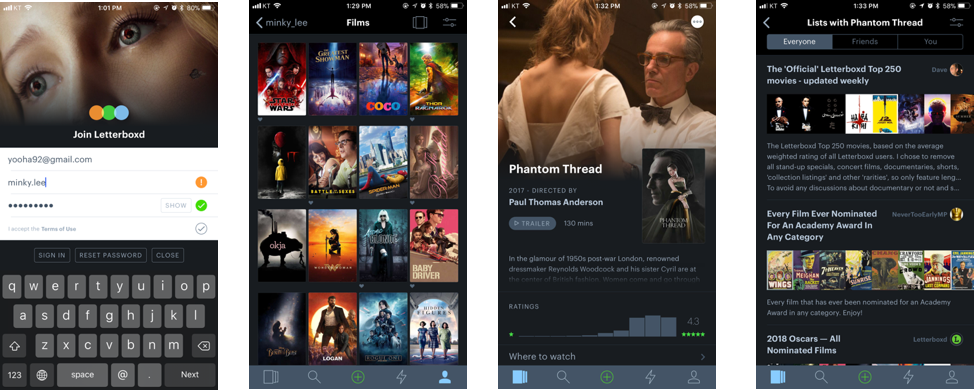

MINKY LEE
UX design
Process Study
2018 / UX / UI
in 2018, as a part of the UX course I was taking, I had to desgin a service of my choice. I spent a lot of time on watching films and dramas on streaming services, and was using couple of documentation / recommendation apps. They were susally good, but there were some parts that I didn't quite like such as the recommendation system and the star ratings. The recommendation system often recommended something I clearly wouldn't want to watch and I just didn't trust the star ratings. Plus, it was the time when people started talk about sexual harrasments on the production process, and people I know, including me, didn't want to consume something that came out of exploitation on women and the minority. So this is the persona I set.
First I conducted some text based interview to see if my target users are feeling the same way. I mainly asked whether they feel the recommendation mechanism in the service they're using (mainly Netflix) is working, who's recommendation they trust when they're choosing to watch next, and if they want to know if there was any exploitation on the course of making the films and dramas. They answered
- They do feel the recommendation system doesn't work sometimes
- They usually trust recommendations from friends who's taste is simillar to their own
- They want to know it if there was sexual harrasments and exploitaions dring the production process
Based on the result of the survey I conducted and the persona I've set, I drew a journey map of the user. This might not be the perfect way to predict the behaviour of the user, but it helped me guessing what might be the most frustrating thing while they're trying to find what to watch.

According to an online news article, The secrets of Netflix’s recommendation system – and why it may not work for you, it seems that at least in Netflix, even though the reccomendation system itself works in a way that makes sense, (which is to recommend something that's liked by other users who likes limillar things with you) the 'tags' that's attatched to each contents are still marked by their employees. So if what the user thinks about a content is different from what the certain Netflix employees think, the user ends up with some unsatisfactory recommendations. So what if I let the users to add tags?
Rotten apples is a website where you can search a title of a film and see if there was any sexual misconduct during the production period. If there was no such accusation, it is shown as 'fresh apples'. If there was, it says 'rotten apples' and provides links of articles related to the accusation. If someone thinks that the accusation is false, they can contact the managers of the site. But to get all this information, the user has to find the website and search the film. What if I add a small feature in the service that lets the user know?
I also did some research on other applications for film documentation / recommendations. Letterboxed is one of the most popular. I liked how they organise the 'watched' films with posters. But when you go one depths further, it seems that there are too many information on one sight and need to set some hierarchy.
Simillar problem with IMDB. They provide huge amounts of information, but need to organise them.
Watcha is the service that's most popular in South Korea. It stresses quite a lot on the star ratings and comments from the users. It also provides somewhat detailed analysis on the user's taste.
Based on the researches and the main features I want to includes, I designed the Information Architecture and wireframes.
And moved on to designing main pages. On the main page, the user can see recommended contents and the news articles related to that content, and they can add tags later on. The user also can create scrapbooks with interviews and movie clips and articles. With informations about each film / drama contents, the 'rotten apple' alert is shown.